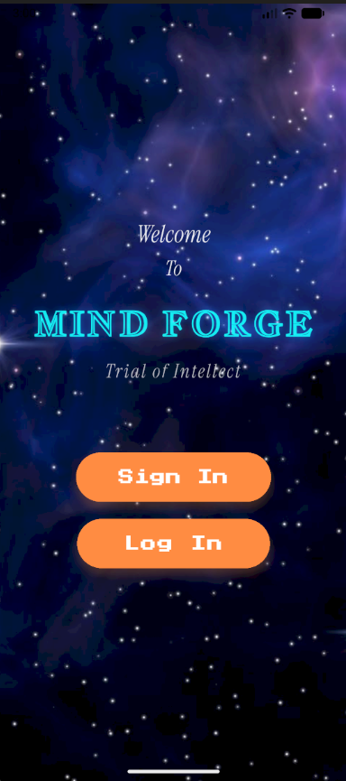

02PLAY • LEARN • GROWMOBILE APP / 2024
MindForge
A Flutter-based educational word-puzzle game designed to make learning more interactive and engaging. The project combines gameplay mechanics with vocabulary challenges and uses Firebase for authentication and data management.